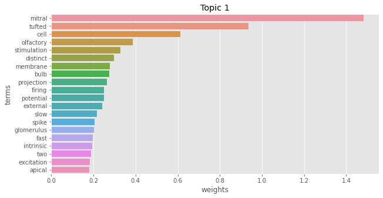
0.634 Nagayama et al. Parallel Tufted Cell and Mitral Cell Pathways from the Olfactory Bulb to the Olfactory Cortex NOJOURNAL 2014
0.588 Burton et al. Greater excitability and firing irregularity of tufted cells underlies distinct afferent-evoked activity of olfactory bulb mitral and tufted cells The Journal of Physiology 2014
0.484 E. et al. Distinct temporal filters in mitral cells and external tufted cells of the olfactory bulb The Journal of Physiology September 29, 2017
0.474 Chen et al. Membrane and synaptic properties of mitral cells in slices of rat olfactory bulb Brain Research January 16, 1997
0.473 Nagayama et al. Mitral and Tufted Cells Differ in the Decoding Manner of Odor Maps in the Rat Olfactory Bulb Journal of Neurophysiology 2004/06/01
0.470 Jan et al. External Tufted Cells Drive the Output of Olfactory Bulb Glomeruli The Journal of Neuroscience 02/18/2009
0.458 Urban et al. Reciprocal intraglomerular excitation and intra- and interglomerular lateral inhibition between mouse olfactory bulb mitral cells The Journal of Physiology July 1, 2002
0.451 Imamura et al. Subpopulations of Projection Neurons in the Olfactory Bulb Frontiers in Neural Circuits 2020-8-28
0.435 Pimentel et al. Glutamatergic transmission and plasticity between olfactory bulb mitral cells The Journal of Physiology April 15, 2008
0.435 Manabe et al. Sniff rhythm-paced fast and slow gamma-oscillations in the olfactory bulb: relation to tufted and mitral cells and behavioral states Journal of Neurophysiology 2013/10/01
0.417 Arruda et al. The Periglomerular Cell of the Olfactory Bulb and its Role in Controlling Mitral Cell Spiking: A Computational Model PLOS ONE 06-Feb-2013
0.416 Huang et al. Reciprocal connectivity between mitral cells and external plexiform layer interneurons in the mouse olfactory bulb Frontiers in Neural Circuits 2013
0.405 Jahr et al. An intracellular analysis of dendrodendritic inhibition in the turtle in vitro olfactory bulb The Journal of Physiology 1982
0.396 Najac et al. Intraglomerular Lateral Inhibition Promotes Spike Timing Variability in Principal Neurons of the Olfactory Bulb The Journal of Neuroscience 03/11/2015
0.387 Kato et al. Parvalbumin-Expressing Interneurons Linearly Control Olfactory Bulb Output Neuron December 4, 2013
0.377 Carlson et al. Long-Lasting Depolarizations in Mitral Cells of the Rat Olfactory Bulb Journal of Neuroscience 2000/03/01
0.354 Braubach et al. The glomerular network of the zebrafish olfactory bulb Cell and Tissue Research 2021-01-23
0.353 Schoppa et al. AMPA autoreceptors drive correlated spiking in olfactory bulb glomeruli Nature Neuroscience November 2002
0.346 Fukunaga et al. Two Distinct Channels of Olfactory Bulb Output Neuron July 26, 2012
0.337 Fantana et al. Rat Olfactory Bulb Mitral Cells Receive Sparse Glomerular Inputs Neuron September 11, 2008
0.321 Bourne et al. Three-dimensional synaptic analyses of mitral cell and external tufted cell dendrites in rat olfactory bulb glomeruli Journal of Comparative Neurology February 15, 2017
0.318 Hayar et al. Olfactory Bulb External Tufted Cells Are Synchronized by Multiple Intraglomerular Mechanisms The Journal of Neuroscience 09/07/2005
0.305 Schoppa et al. Glomerulus-Specific Synchronization of Mitral Cells in the Olfactory Bulb Neuron August 30, 2001
0.300 Smith et al. Self-inhibition of olfactory bulb neurons Nature Neuroscience August 2002
0.289 Zeppilli et al. Molecular characterization of projection neuron subtypes in the mouse olfactory bulb eLife July 22, 2021
0.287 Gire et al. Mitral Cells in the Olfactory Bulb Are Mainly Excited through a Multistep Signaling Path The Journal of Neuroscience 02/29/2012
0.273 Heyward et al. Membrane Bistability in Olfactory Bulb Mitral Cells Journal of Neuroscience 2001/07/15
0.270 Desmaisons et al. Control of Action Potential Timing by Intrinsic Subthreshold Oscillations in Olfactory Bulb Output Neurons Journal of Neuroscience 1999/12/15
0.267 Lukas et al. Vasopressin cells in the rodent olfactory bulb resemble non-bursting superficial tufted cells and are primarily inhibited upon olfactory nerve stimulation eNeuro 2019/06/19
0.254 Yaksi et al. Topological Reorganization of Odor Representations in the Olfactory Bulb PLoS Biol July 3, 2007
0.246 Lin et al. Formation of Precise Connections in the Olfactory Bulb Occurs in the Absence of Odorant-Evoked Neuronal Activity Neuron April 2000
0.231 Leng et al. Discharge patterning in rat olfactory bulb mitral cells in vivo Physiological Reports 2014-10-3
0.225 Chae et al. Mosaic representations of odors in the input and output layers of the mouse olfactory bulb Nature Neuroscience 2019-08
0.218 Blanchart et al. Time frame of mitral cell development in the mice olfactory bulb The Journal of Comparative Neurology June 1, 2006
0.176 Ly et al. Odor-evoked Increases in Olfactory Bulb Mitral Cell Spiking Variability bioRxiv 2021-07-03
0.172 Korshunov et al. Spiking and Membrane Properties of Rat Olfactory Bulb Dopamine Neurons Frontiers in Cellular Neuroscience 2020
0.159 Liu et al. Olfactory bulb short axon cell release of GABA and dopamine produces a temporally biphasic inhibition-excitation response in external tufted cells The Journal of neuroscience : the official journal of the Society for Neuroscience 2013-2-13
0.158 Egan et al. Properties and rundown of sodium-activated potassium channels in rat olfactory bulb neurons Journal of Neuroscience 1992/05/01
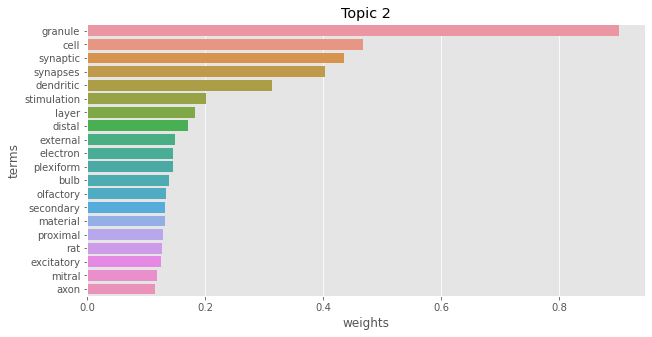
0.555 Burton et al. Rapid Feedforward Inhibition and Asynchronous Excitation Regulate Granule Cell Activity in the Mammalian Main Olfactory Bulb The Journal of Neuroscience 10/21/2015
0.543 Woolf et al. Serial reconstructions of granule cell spines in the mammalian olfactory bulb Synapse March 1, 1991
0.523 Balu et al. Multiple Modes of Synaptic Excitation of Olfactory Bulb Granule Cells The Journal of Neuroscience 05/23/2007
0.508 Bartel et al. Dendrodendritic synapses in the mouse olfactory bulb external plexiform layer Journal of Comparative Neurology 2015
0.506 Woolf et al. Local information processing in dendritic trees: subsets of spines in granule cells of the mammalian olfactory bulb Journal of Neuroscience 1991/06/01
0.471 Price et al. The Morphology of the Granule Cells of the Olfactory Bulb Journal of Cell Science 1970/07/01
0.462 Price et al. The Mitral and Short Axon Cells of the Olfactory Bulb Journal of Cell Science 1970/11/01
0.462 Egger et al. Synaptic sodium spikes trigger long-lasting depolarizations and slow calcium entry in rat olfactory bulb granule cells European Journal of Neuroscience 2008
0.458 Pressler et al. Direct Recording of Dendrodendritic Excitation in the Olfactory Bulb: Divergent Properties of Local and External Glutamatergic Inputs Govern Synaptic Integration in Granule Cells Journal of Neuroscience 2017/12/06
0.452 Nunes et al. Disinhibition of olfactory bulb granule cells accelerates odour discrimination in mice Nature Communications November 23, 2015
0.449 Egger et al. Mechanisms of Lateral Inhibition in the Olfactory Bulb: Efficiency and Modulation of Spike-Evoked Calcium Influx into Granule Cells Journal of Neuroscience 2003/08/20
0.432 Price et al. The Synaptology of the Granule Cells of the Olfactory Bulb Journal of Cell Science 1970/07/01
0.427 Gao et al. Long-term plasticity of excitatory inputs to granule cells in the rat olfactory bulb Nature Neuroscience June 2009
0.386 Wellis et al. Intracellular responses of identified rat olfactory bulb interneurons to electrical and odor stimulation Journal of Neurophysiology 1990/09/01
0.373 Pinching et al. The Neuron Types of the Glomerular Layer of the Olfactory Bulb Journal of Cell Science 1971/09/01
0.365 Pressler et al. Activation of granule cell interneurons by two divergent local circuit pathways in the rat olfactory bulb Journal of Neuroscience 2020/11/24
0.363 Migliore et al. Functional roles of distributed synaptic clusters in the mitral–granule cell network of the olfactory bulb Frontiers in Integrative Neuroscience 2010
0.362 Simões-de-Souza et al. Electrical responses of three classes of granule cells of the olfactory bulb to synaptic inputs in different dendritic locations Frontiers in Computational Neuroscience 2014-10-13
0.360 Matsuno et al. Synaptic distribution of individually labeled mitral cells in the external plexiform layer of the mouse olfactory bulb Journal of Comparative Neurology 2017
0.345 Cang et al. In Vivo Whole-Cell Recording of Odor-Evoked Synaptic Transmission in the Rat Olfactory Bulb The Journal of Neuroscience 05/15/2003
0.339 Cauthron et al. Long-Term Plasticity in the Regulation of Olfactory Bulb Activity by Centrifugal Fibers from Piriform Cortex The Journal of Neuroscience 07/16/2014
0.331 Pinching et al. The Neuropil of the Glomeruli of the Olfactory Bulb Journal of Cell Science 1971/09/01
0.310 Pressler et al. Muscarinic Receptor Activation Modulates Granule Cell Excitability and Potentiates Inhibition onto Mitral Cells in the Rat Olfactory Bulb The Journal of Neuroscience 10/10/2007
0.305 Price et al. An Electron-Microscopic Study of the Termination of the Afferent Fibres to the Olfactory Bulb from the Cerebral Hemisphere Journal of Cell Science 1970/07/01
0.296 Didier et al. A dendrodendritic reciprocal synapse provides a recurrent excitatory connection in the olfactory bulb Proceedings of the National Academy of Sciences 05/22/2001
0.290 Satoh et al. Variations in GABA immunoreactivity among granule cells of the mouse olfactory bulb, as revealed by high-voltage electron microscopy Neuroscience Letters September 15, 2020
0.284 Lukas et al. Long-Term Plasticity at the Mitral and Tufted Cell to Granule Cell Synapse of the Olfactory Bulb Investigated with a Custom Multielectrode in Acute Brain Slice Preparations NOJOURNAL 2018
0.283 Nagayama et al. Neuronal organization of olfactory bulb circuits Frontiers in Neural Circuits 2014
0.273 Kosaka et al. Intraglomerular dendritic link connected by gap junctions and chemical synapses in the mouse main olfactory bulb: electron microscopic serial section analyses Neuroscience 2005
0.253 Ona-Jodar et al. Two-Photon Na+ Imaging Reports Somatically Evoked Action Potentials in Rat Olfactory Bulb Mitral and Granule Cell Neurites Frontiers in Cellular Neuroscience 2017-2-28
0.248 Urban et al. Computing with Dendrodendritic Synapses in the Olfactory Bulb Annals of the New York Academy of Sciences July 1, 2009
0.203 Willhite et al. Viral tracing identifies distributed columnar organization in the olfactory bulb Proceedings of the National Academy of Sciences 08/15/2006
0.157 Kiyokage et al. Effects of estradiol on dopaminergic synapse formation in the mouse olfactory bulb Journal of Comparative Neurology NODATE
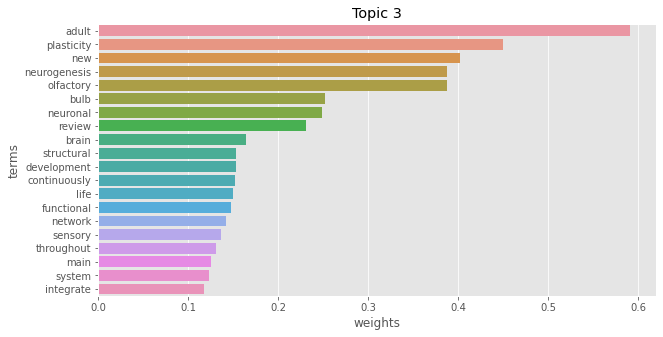
0.617 Lepousez et al. The Impact of Adult Neurogenesis on Olfactory Bulb Circuits and Computations Annual Review of Physiology 2013
0.566 Breton-Provencher et al. Newborn neurons in the adult olfactory bulb: Unique properties for specific odor behavior Behavioural Brain Research February 14, 2012
0.484 Huart et al. Plasticity of the Human Olfactory System: The Olfactory Bulb Molecules 2013-09-17
0.476 Lledo et al. Adult Olfactory Bulb Neurogenesis Cold Spring Harbor Perspectives in Biology 2016-8
0.475 Pignatelli et al. Neurogenesis in the Adult Olfactory Bulb NOJOURNAL 2010
0.473 Malvaut et al. The Role of Adult-Born Neurons in the Constantly Changing Olfactory Bulb Network Neural Plasticity 2015/12/29
0.466 Lledo et al. Inhibitory Interneurons in the Olfactory Bulb: From Development to Function The Neuroscientist August 1, 2004
0.464 Bardy et al. How, When, and Where New Inhibitory Neurons Release Neurotransmitters in the Adult Olfactory Bulb The Journal of Neuroscience 12/15/2010
0.452 Yamaguchi et al. Interneurons in the Olfactory Bulb: Roles in the Plasticity of Olfactory Information Processing NOJOURNAL 2014
0.444 Mizrahi et al. Dendritic stability in the adult olfactory bulb Nature Neuroscience 2003/11
0.438 Mizrahi et al. Dendritic development and plasticity of adult-born neurons in the mouse olfactory bulb Nature Neuroscience 2007/04
0.410 Tufo et al. Development of the mammalian main olfactory bulb Development 2022-02-11
0.397 Carleton et al. Becoming a new neuron in the adult olfactory bulb Nature Neuroscience May 2003
0.393 Kosaka et al. Neuronal organization of the main olfactory bulb revisited Anatomical Science International 2015/10/29
0.393 Kosaka et al. Neuronal organization of the main olfactory bulb revisited Anatomical Science International 2016-03
0.389 Wu et al. Plasticity in olfactory bulb circuits Current Opinion in Neurobiology October 1, 2020
0.389 Sailor et al. Persistent Structural Plasticity Optimizes Sensory Information Processing in the Olfactory Bulb Neuron July 20, 2016
0.378 Imai et al. Construction of functional neuronal circuitry in the olfactory bulb Seminars in Cell & Developmental Biology November 2014
0.354 Mandairon et al. Odor Perception and Olfactory Bulb Plasticity in Adult Mammals Journal of Neurophysiology 2009/05/01
0.348 Sahay et al. Pattern separation: a common function for new neurons in hippocampus and olfactory bulb Neuron 2011-5-26
0.328 Kamimura et al. New granule cells in the olfactory bulb are associated with high respiratory input in an enriched odor environment Neuroscience Research 2022-05-27
0.310 Mouret et al. Centrifugal Drive onto Local Inhibitory Interneurons of the Olfactory Bulb Annals of the New York Academy of Sciences July 1, 2009
0.301 Lledo et al. Origin and function of olfactory bulb interneuron diversity Trends in Neurosciences August 2008
0.265 Gheusi et al. Adult-Born Neurons in the Olfactory Bulb: Integration and Functional Consequences NOJOURNAL 2012
0.264 Harvey et al. Neuromodulation of Synaptic Transmission in the Main Olfactory Bulb International Journal of Environmental Research and Public Health 2018-10-08
0.261 Galliano et al. Brief sensory deprivation triggers cell type-specific structural and functional plasticity in olfactory bulb neurons bioRxiv 2020-05-12
0.258 Chatterjee et al. Sniff-Like Patterned Input Results in Long-Term Plasticity at the Rat Olfactory Bulb Mitral and Tufted Cell to Granule Cell Synapse NOJOURNAL 2016
0.257 Huang et al. Task Learning Promotes Plasticity of Interneuron Connectivity Maps in the Olfactory Bulb Journal of Neuroscience 2016/08/24
0.242 Oboti et al. Newborn interneurons in the accessory olfactory bulb promote mate recognition in female mice Neurogenesis 2011
0.224 Kovalchuk et al. In vivo odourant response properties of migrating adult-born neurons in the mouse olfactory bulb Nature Communications 2015-02-19
0.185 Benito et al. A Pool of Postnatally Generated Interneurons Persists in an Immature Stage in the Olfactory Bulb The Journal of Neuroscience: The Official Journal of the Society for Neuroscience 2018-11-14
0.154 Kim et al. Distinct Developmental Features of Olfactory Bulb Interneurons NOJOURNAL NODATE
0.091 Clark et al. THE PROJECTION OF THE OLFACTORY EPITHELIUM ON THE OLFACTORY BULB IN THE RABBIT Journal of Neurology, Neurosurgery, and Psychiatry 1951-02
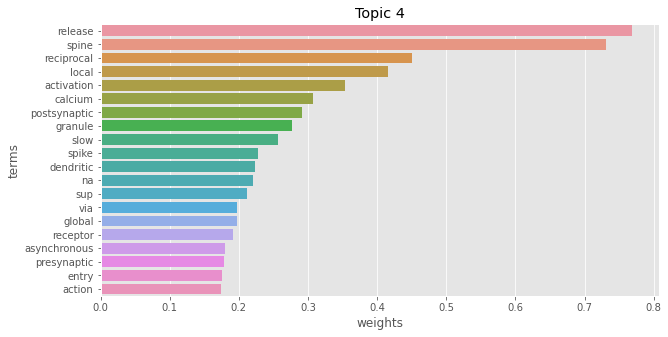
0.755 Lage-Rupprecht et al. Presynaptic NMDARs cooperate with local spikes toward GABA release from the reciprocal olfactory bulb granule cell spine eLife 2020-11-30
0.719 Lage-Rupprecht et al. Local reciprocal release of GABA from olfactory bulb granule cell spines: Cooperation of conventional release mechanisms and NMDA receptors bioRxiv 2019-10-03
0.710 Lage-Rupprecht et al. Presynaptic NMDA receptors cooperate with local action potentials to implement activity-dependent GABA release from the reciprocal olfactory bulb granule cell spine bioRxiv 2020-10-06
0.637 Lage-Rupprecht et al. Local Postsynaptic Signaling on Slow Time Scales in Reciprocal Olfactory Bulb Granule Cell Spines Matches Asynchronous Release NOJOURNAL 2020-11
0.636 Jodar et al. Local postsynaptic signalling on slow time scales in reciprocal olfactory bulb granule cell spines matches asynchronous release bioRxiv 2020-09-04
0.554 Egger et al. Dendrodendritic Synaptic Signals in Olfactory Bulb Granule Cells: Local Spine Boost and Global Low-Threshold Spike The Journal of Neuroscience 04/06/2005
0.485 Aghvami et al. Coincidence Detection within the Excitable Rat Olfactory Bulb Granule Cell Spines Journal of Neuroscience 2019/01/23
0.464 Bywalez et al. Local Postsynaptic Voltage-Gated Sodium Channel Activation in Dendritic Spines of Olfactory Bulb Granule Cells Neuron February 4, 2015
0.449 Stroh et al. NMDA Receptor-Dependent Synaptic Activation of TRPC Channels in Olfactory Bulb Granule Cells Journal of Neuroscience 2012/04/25
0.443 Mueller et al. Dendritic integration in olfactory bulb granule cells upon simultaneous multispine activation: Low thresholds for nonlocal spiking activity PLOS Biology 23-Sep-2020
0.416 Isaacson et al. Mechanisms governing dendritic γ-aminobutyric acid (GABA) release in the rat olfactory bulb Proceedings of the National Academy of Sciences 2001/01/02
0.393 Chen et al. Analysis of Relations between NMDA Receptors and GABA Release at Olfactory Bulb Reciprocal Synapses Neuron March 2000
0.372 Mueller et al. Dendritic integration in olfactory bulb granule cells: Thresholds for lateral inhibition and role of active conductances upon simultaneous activation. bioRxiv 2020-01-10
0.371 Egger et al. Calcium buffering in rodent olfactory bulb granule cells and mitral cells The Journal of Physiology 2009-9-15
0.341 Bywalez et al. Physiology of rodent olfactory bulb interneurons NOJOURNAL 2016-04-05
0.338 Petzold et al. Serotonergic modulation of odor input to the mammalian olfactory bulb Nature Neuroscience 2009-06
0.316 Woolf et al. Local communication within dendritic spines: models of second messenger diffusion in granule cell spines of the mammalian olfactory bulb Synapse (New York, N.Y.) Aug 1994
0.248 Fischer et al. Dopamine-induced calcium signaling in olfactory bulb astrocytes Scientific Reports 2020-01-20
0.238 Breton-Provencher et al. Principal cell activity induces spine relocation of adult-born interneurons in the olfactory bulb Nature Communications 2016-08-31
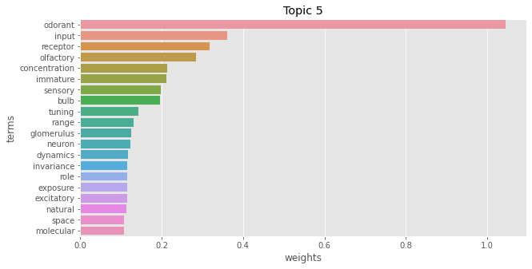
0.558 Burton et al. Mapping odorant sensitivities reveals a sparse but structured representation of olfactory chemical space by sensory input to the mouse olfactory bulb eLife 2022-07-21
0.558 Wachowiak et al. Representation of Odorants by Receptor Neuron Input to the Mouse Olfactory Bulb Neuron November 20, 2001
0.555 Homma et al. In vivo functional properties of juxtaglomerular neurons in the mouse olfactory bulb Frontiers in Neural Circuits 2013
0.547 Carey et al. Temporal Structure of Receptor Neuron Input to the Olfactory Bulb Imaged in Behaving Rats Journal of Neurophysiology 2009/02/01
0.544 Storace et al. Measuring the olfactory bulb input-output transformation reveals a contribution to the perception of odorant concentration invariance Nature Communications 2017/07/19
0.527 Fletcher et al. Olfactory Bulb Mitral-Tufted Cell Plasticity: Odorant-Specific Tuning Reflects Previous Odorant Exposure Journal of Neuroscience 2003/07/30
0.495 Lodovichi et al. Topographic organization in the olfactory bulb Cell and Tissue Research 2021-01-06
0.466 Rubin et al. Optical Imaging of Odorant Representations in the Mammalian Olfactory Bulb Neuron July 1, 1999
0.376 Huang et al. Immature olfactory sensory neurons provide behaviorally useful sensory input to the olfactory bulb bioRxiv 2021-01-08
0.376 Huang et al. Immature olfactory sensory neurons provide behaviorally useful sensory input to the olfactory bulb NOJOURNAL 2021-01-08
0.365 Verhagen et al. Sniffing controls an adaptive filter of sensory input to the olfactory bulb Nature Neuroscience May 2007
0.357 Kermen et al. Odor hedonics coding in the vertebrate olfactory bulb Cell and Tissue Research 2021-01-01
0.346 Tan et al. Odor Information Processing by the Olfactory Bulb Analyzed in Gene-Targeted Mice Neuron March 25, 2010
0.336 Schoppa et al. Dendritic processing within olfactory bulb circuits Trends in Neurosciences September 2003
0.326 Vincis et al. Dense representation of natural odorants in the mouse olfactory bulb Nature Neuroscience April 2012
0.309 Johnson et al. Glomerular activity patterns evoked by natural odor objects in the rat olfactory bulb are related to patterns evoked by major odorant components The Journal of Comparative Neurology May 1, 2010
0.305 Storace et al. The Mammalian Olfactory Bulb Contributes to the Adaptation of Odor Responses: A Second Perceptual Computation Carried Out by the Bulb eNeuro 2021/09/01
0.270 Hu et al. In vivo odorant input induces distinct synaptic plasticity of GABAergic synapses in developing zebrafish olfactory bulb Biochemical and Biophysical Research Communications August 8, 2020
0.261 Hsia et al. Dopamine Depresses Synaptic Inputs Into the Olfactory Bulb Journal of Neurophysiology August 1, 1999
0.260 Meister et al. Tuning and Topography in an Odor Map on the Rat Olfactory Bulb Journal of Neuroscience 2001/02/15
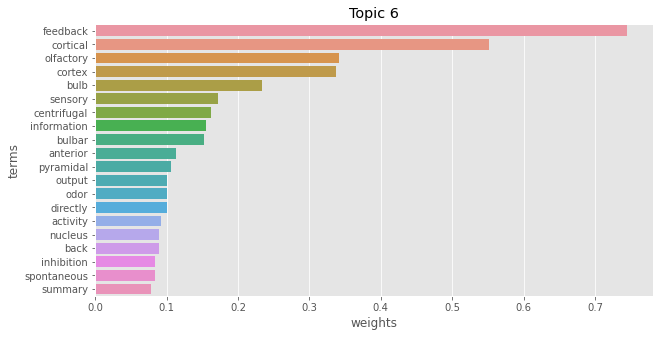
0.717 Boyd et al. Cortical Feedback Control of Olfactory Bulb Circuits Neuron December 20, 2012
0.623 Mazo et al. GABAB Receptors Tune Cortical Feedback to the Olfactory Bulb The Journal of Neuroscience 08/10/2016
0.621 Boyd et al. Broadcasting of Cortical Activity to the Olfactory Bulb Cell Reports February 24, 2015
0.621 Otazu et al. Cortical Feedback Decorrelates Olfactory Bulb Output in Awake Mice Neuron June 17, 2015
0.585 Wallhorn et al. Functional properties of top-down projections from the anterior olfactory nucleus to the mouse olfactory bulb NOJOURNAL NODATE
0.583 Markopoulos et al. Functional Properties of Cortical Feedback Projections to the Olfactory Bulb Neuron December 20, 2012
0.553 Kiselycznyk et al. Role of centrifugal projections to the olfactory bulb in olfactory processing Learning & Memory 09/01/2006
0.484 Trejo et al. Fast updating feedback from piriform cortex to the olfactory bulb relays multimodal reward contingency signals during rule-reversal NOJOURNAL 2023-09-13
0.469 Hook et al. Bulbar projecting subcortical GABAergic neurons send collateral branches extensively and selectively to primary olfactory cortical regions Journal of Comparative Neurology NODATE
0.344 Zandt et al. Centrifugal Innervation of the Olfactory Bulb: A Reappraisal eNeuro 2019-2-7
0.344 Zandt et al. Centrifugal Innervation of the Olfactory Bulb: A Reappraisal eNeuro 2019/01/01
0.315 Oboti et al. Amygdala Corticofugal Input Shapes Mitral Cell Responses in the Accessory Olfactory Bulb eNeuro 2018/05/22
0.310 Matsutani et al. Centrifugal innervation of the mammalian olfactory bulb Anatomical Science International December 1, 2008
0.271 Grobman et al. A Mirror-Symmetric Excitatory Link Coordinates Odor Maps across Olfactory Bulbs and Enables Odor Perceptual Unity Neuron August 2, 2018
0.249 Miyamichi et al. Dissecting Local Circuits: Parvalbumin Interneurons Underlie Broad Feedback Control of Olfactory Bulb Output Neuron December 4, 2013
0.209 Lowe et al. Electrical signaling in the olfactory bulb Current Opinion in Neurobiology August 2003
0.196 Brunert et al. Cell-Type-Specific Modulation of Sensory Responses in Olfactory Bulb Circuits by Serotonergic Projections from the Raphe Nuclei The Journal of Neuroscience 06/22/2016
0.189 Kapoor et al. Activation of raphe nuclei triggers rapid and distinct effects on parallel olfactory bulb output channels Nature Neuroscience February 2016
0.189 Crespo et al. The Circuits of the Olfactory Bulb. The Exception as a Rule The Anatomical Record 2013
0.162 Licht et al. Aberrant circuitry underlying olfaction in the face of severe olfactory bulb degeneration NOJOURNAL 2023-02-03
0.117 Kermen et al. Interhemispheric connections between olfactory bulbs improve odor detection bioRxiv 2019-09-12
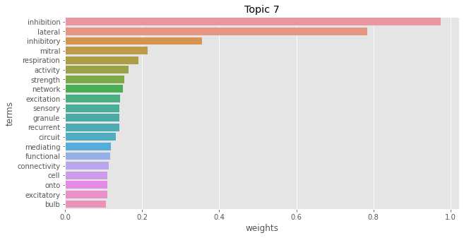
0.719 Arevian et al. Activity-dependent gating of lateral inhibition in the mouse olfactory bulb Nature Neuroscience January 2008
0.588 Whitesell et al. Interglomerular Lateral Inhibition Targeted on External Tufted Cells in the Olfactory Bulb The Journal of Neuroscience 01/23/2013
0.536 Margrie et al. Action potential propagation in mitral cell lateral dendrites is decremental and controls recurrent and lateral inhibition in the mammalian olfactory bulb Proceedings of the National Academy of Sciences 01/02/2001
0.515 Phillips et al. Respiration drives network activity and modulates synaptic and circuit processing of lateral inhibition in the olfactory bulb The Journal of neuroscience : the official journal of the Society for Neuroscience 2012-1-4
0.504 Geramita et al. Postnatal Odor Exposure Increases the Strength of Interglomerular Lateral Inhibition onto Olfactory Bulb Tufted Cells Journal of Neuroscience 2016/12/07
0.485 Shmuel et al. Strong, weak and neuron type dependent lateral inhibition in the olfactory bulb Scientific Reports 2019-02-07
0.437 Labarrera et al. Tonic inhibition sets the state of excitability in olfactory bulb granule cells The Journal of Physiology April 1, 2013
0.434 Yu et al. Sparse Distributed Representation of Odors in a Large-scale Olfactory Bulb Circuit PLOS Comput Biol 28-Mar-2013
0.420 Zavitz et al. Effect of interglomerular inhibitory networks on olfactory bulb odor representations bioRxiv 2020-03-05
0.410 Vučinić et al. Interglomerular Center-Surround Inhibition Shapes Odorant-Evoked Input to the Mouse Olfactory Bulb In Vivo Journal of Neurophysiology 2006/03/01
0.404 Economo et al. Control of Mitral/Tufted Cell Output by Selective Inhibition among Olfactory Bulb Glomeruli Neuron July 20, 2016
0.394 Egger et al. Olfactory bulb granule cells: specialized to link coactive glomerular columns for percept generation and discrimination of odors Cell and Tissue Research 2021-01
0.376 Giridhar et al. Timescale-dependent shaping of correlation by olfactory bulb lateral inhibition Proceedings of the National Academy of Sciences 04/05/2011
0.353 Short et al. Respiration Gates Sensory Input Responses in the Mitral Cell Layer of the Olfactory Bulb PLOS ONE 22-Dec-2016
0.331 Geramita et al. Distinct lateral inhibitory circuits drive parallel processing of sensory information in the mammalian olfactory bulb eLife 2016/06/28
0.306 Gödde et al. Disruption of Kcc2-dependent inhibition of olfactory bulb output neurons suggests its importance in odour discrimination Nature Communications July 8, 2016
0.298 Zak et al. Optical manipulations reveal strong reciprocal inhibition but limited recurrent excitation within olfactory bulb glomeruli bioRxiv 2021-07-22
0.294 Aungst et al. Centre–surround inhibition among olfactory bulb glomeruli Nature December 11, 2003
0.268 Shao et al. Reciprocal Inhibitory Glomerular Circuits Contribute to Excitation–Inhibition Balance in the Mouse Olfactory Bulb eNeuro 2019/05/01
0.250 Lindeman et al. Reward contingency modulates olfactory bulb output via pathway-dependent peri-somatic inhibition NOJOURNAL 2023-08-18
0.240 Zimnik et al. α1A-Adrenergic regulation of inhibition in the olfactory bulb The Journal of Physiology 2013-4-01
0.227 Fukunaga et al. Independent control of gamma and theta activity by distinct interneuron networks in the olfactory bulb Nature Neuroscience September 2014
0.208 Wienisch et al. Population imaging at subcellular resolution supports specific and local inhibition by granule cells in the olfactory bulb Scientific Reports 2016/07/08
0.167 Cleland et al. Non-topographical contrast enhancement in the olfactory bulb BMC Neuroscience January 24, 2006
0.159 Dietz et al. Contrasting short-term plasticity at two sides of the mitral–granule reciprocal synapse in the mammalian olfactory bulb The Journal of Physiology December 1, 2005
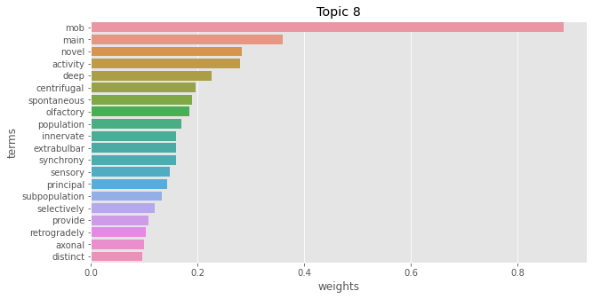
0.743 Eyre et al. Distinct Deep Short-Axon Cell Subtypes of the Main Olfactory Bulb Provide Novel Intrabulbar and Extrabulbar GABAergic Connections Journal of Neuroscience 2008/08/13
0.743 Eyre et al. Distinct deep short-axon cell subtypes of the main olfactory bulb provide novel intrabulbar and extrabulbar GABAergic connections The Journal of Neuroscience: The Official Journal of the Society for Neuroscience 2008-08-13
0.614 Burton et al. Olfactory Bulb Deep Short-Axon Cells Mediate Widespread Inhibition of Tufted Cell Apical Dendrites Journal of Neuroscience 2017/02/01
0.578 Ford et al. Steady-state centrifugal input via the lateral olfactory tract modulates spontaneous activity in the rat main olfactory bulb Neuroscience 2017-04-21
0.551 Burton et al. Inhibitory circuits of the mammalian main olfactory bulb Journal of Neurophysiology 2017/10/01
0.444 Burton et al. Cell and circuit origins of fast network oscillations in the mammalian main olfactory bulb NOJOURNAL 2021-09-27
0.439 Hintiryan et al. Comprehensive connectivity of the mouse main olfactory bulb: analysis and online digital atlas Frontiers in Neuroanatomy 2012
0.432 Hernández-Soto et al. Main olfactory bulb reconfiguration by prolonged passive olfactory experience correlates with increased brain-derived neurotrophic factor and improved innate olfaction The European Journal of Neuroscience 2022-03
0.377 Mandairon et al. Deprivation of sensory inputs to the olfactory bulb up-regulates cell death and proliferation in the subventricular zone of adult mice Neuroscience June 27, 2003
0.353 Schoenfeld et al. Topographic organization of tufted cell axonal projections in the hamster main olfactory bulb: An intrabulbar associational system The Journal of Comparative Neurology May 22, 1985
0.285 Chockanathan et al. Changes in weak pair-wise correlations during running reshapes network state in the main olfactory bulb bioRxiv 2020-08-04
0.248 Kosaka et al. “Interneurons” in the olfactory bulb revisited Neuroscience Research February 2011
0.201 Zhang et al. Paradoxically sparse chemosensory tuning in broadly-integrating external granule cells in the mouse accessory olfactory bulb bioRxiv 2019-07-16
0.180 Nai et al. Activation of α1 and α2 noradrenergic receptors exert opposing effects on excitability of main olfactory bulb granule cells Neuroscience August 25, 2010
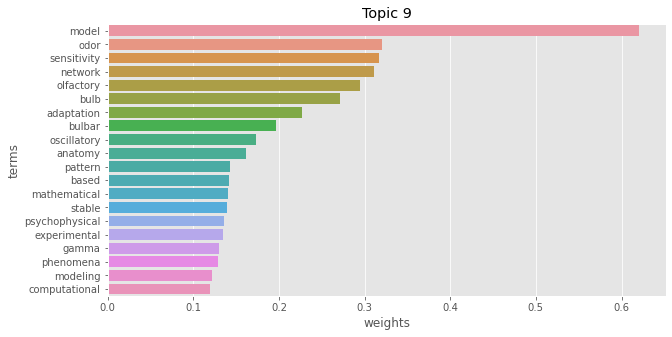
0.639 Li et al. Modeling the olfactory bulb and its neural oscillatory processings Biological Cybernetics 1989/09/01
0.596 Li et al. Modeling the Olfactory Bulb - Coupled Nonlinear Oscillators NOJOURNAL NODATE
0.584 Li et al. A model of olfactory adaptation and sensitivity enhancement in the olfactory bulb Biological Cybernetics 1990/02/01
0.584 Li et al. A model of olfactory adaptation and sensitivity enhancement in the olfactory bulb Biological Cybernetics 1990-02-01
0.509 Kersen et al. Connectivity and dynamics in the olfactory bulb PLoS computational biology 2022-02
0.430 Davison et al. Dendrodendritic Inhibition and Simulated Odor Responses in a Detailed Olfactory Bulb Network Model Journal of Neurophysiology 2003/09/01
0.426 Li et al. Odor recognition and segmentation by a model olfactory bulb and cortex arXiv:cond-mat/0002289 2000-02-18
0.422 Kersen et al. Connectivity and dynamics in the olfactory bulb bioRxiv 2021-07-20
0.420 Kepple et al. Computational algorithms and neural circuitry for compressed sensing in the mammalian main olfactory bulb bioRxiv 2018-06-05
0.399 Zhaoping et al. Olfactory object recognition, segmentation, adaptation, target seeking, and discrimination by the network of the olfactory bulb and cortex: computational model and experimental data Current Opinion in Behavioral Sciences October 2016
0.360 Chow et al. Neurogenesis Drives Stimulus Decorrelation in a Model of the Olfactory Bulb PLOS Computational Biology 15-Mar-2012
0.355 David et al. Specific Entrainment of Mitral Cells during Gamma Oscillation in the Rat Olfactory Bulb PLoS Computational Biology 2009-10-30
0.326 Zavatone-Veth et al. Neural circuits for fast Poisson compressed sensing in the olfactory bulb NOJOURNAL 2023-06-24
0.303 Ascione et al. A stochastic model for interacting neurons in the olfactory bulb Biosystems 2019-11-01
0.300 Friedrich et al. Neuronal circuits and computations: Pattern decorrelation in the olfactory bulb FEBS Letters 2014-08-01
0.281 Rubin et al. Dynamical Mechanisms of Odor Processing in Olfactory Bulb Mitral Cells Journal of Neurophysiology 2006/08/01
0.256 Freeman et al. EEG analysis gives model of neuronal template-matching mechanism for sensory search with olfactory bulb Biological Cybernetics 1979-12-01
0.230 Bhalla et al. Exploring parameter space in detailed single neuron models: simulations of the mitral and granule cells of the olfactory bulb Journal of Neurophysiology June 1, 1993
0.213 Ying et al. Progress in defining heterogeneity and modeling periglomerular cells in the olfactory bulb Science China Life Sciences 2012-07-01
0.208 Osinski et al. Pharmacological manipulation of olfactory bulb granule cell excitability modulates beta oscillations: Testing a model bioRxiv 2017-12-15
0.164 Cleland et al. A Systematic Framework for Olfactory Bulb Signal Transformations Frontiers in Computational Neuroscience 2020-9-23
0.123 Wanner et al. Whitening of odor representations by the wiring diagram of the olfactory bulb Nature Neuroscience 2020/03
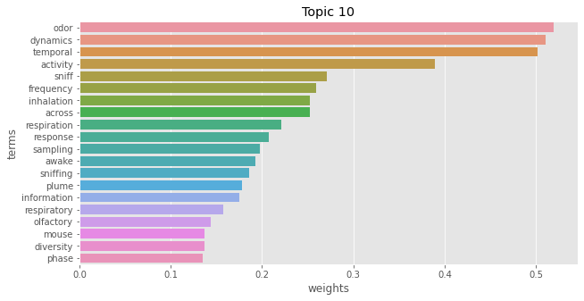
0.559 Carey et al. Effect of Sniffing on the Temporal Structure of Mitral/Tufted Cell Output from the Olfactory Bulb Journal of Neuroscience 2011/07/20
0.517 Lewis et al. Plume Dynamics Structure the Spatiotemporal Activity of Mitral/Tufted Cell Networks in the Mouse Olfactory Bulb Frontiers in Cellular Neuroscience 2021
0.514 Lewis et al. Plume dynamics structure the spatiotemporal activity of glomerular networks in the mouse olfactory bulb bioRxiv 2020-11-26
0.502 Blauvelt et al. Distinct spatiotemporal activity in principal neurons of the mouse olfactory bulb in anesthetized and awake states Frontiers in Neural Circuits 2013
0.497 Short et al. Temporal dynamics of inhalation-linked activity across defined subpopulations of mouse olfactory bulb neurons imaged in vivo. bioRxiv 2019-02-22
0.479 Cury et al. Robust Odor Coding via Inhalation-Coupled Transient Activity in the Mammalian Olfactory Bulb Neuron 2010/11/04
0.477 Spors et al. Temporal Dynamics and Latency Patterns of Receptor Neuron Input to the Olfactory Bulb The Journal of Neuroscience 01/25/2006
0.476 Díaz-Quesada et al. Inhalation Frequency Controls Reformatting of Mitral/Tufted Cell Odor Representations in the Olfactory Bulb Journal of Neuroscience 2018/02/28
0.466 Moran et al. Diverse dynamics of glutamatergic input underlie heterogeneous response patterns of olfactory bulb mitral and tufted cells in vivo bioRxiv 2019-07-04
0.445 Moran et al. Diverse dynamics of glutamatergic input underlie heterogeneous response patterns of olfactory bulb outputs in vivo bioRxiv 2019-09-18
0.443 Moran et al. Dynamics of Glutamatergic Drive Underlie Diverse Responses of Olfactory Bulb Outputs In Vivo eNeuro 2021/03/01
0.427 Dasgupta et al. Coupling of Mouse Olfactory Bulb Projection Neurons to Fluctuating Odor Pulses The Journal of Neuroscience: The Official Journal of the Society for Neuroscience 2022-05-25
0.426 Jordan et al. Sniffing Fast: Paradoxical Effects on Odor Concentration Discrimination at the Levels of Olfactory Bulb Output and Behavior eNeuro 2018-12-26
0.426 Baker et al. Spatiotemporal dynamics of odor responses in the lateral and dorsal olfactory bulb PLOS Biology 18.09.2019
0.422 Spors et al. Spatio-Temporal Dynamics of Odor Representations in the Mammalian Olfactory Bulb Neuron April 11, 2002
0.419 Bathellier et al. Dynamic Ensemble Odor Coding in the Mammalian Olfactory Bulb: Sensory Information at Different Timescales Neuron February 28, 2008
0.407 Gupta et al. Olfactory bulb coding of odors, mixtures and sniffs is a linear sum of odor time profiles Nature Neuroscience January 12, 2015
0.373 Cazakoff et al. Broadly tuned and respiration-independent inhibition in the olfactory bulb of awake mice Nature Neuroscience April 2014
0.352 Iwata et al. Mechanosensory-Based Phase Coding of Odor Identity in the Olfactory Bulb Neuron December 6, 2017
0.344 Eiting et al. Differential Impacts of Repeated Sampling on Odor Representations by Genetically-Defined Mitral and Tufted Cell Subpopulations in the Mouse Olfactory Bulb Journal of Neuroscience 2020/08/05
0.342 Dasgupta et al. Coupling of mouse olfactory bulb projection neurons to fluctuating odour pulses bioRxiv 2020-11-29
0.341 Shani-Narkiss et al. Stability and flexibility of odor representations in the mouse olfactory bulb Frontiers in Neural Circuits 2023
0.324 Kapoor et al. Glomerulus-Specific, Long-Latency Activity in the Olfactory Bulb Granule Cell Network The Journal of Neuroscience 11/08/2006
0.318 Chalansonnet et al. Olfactory Bulb Output Cell Temporal Response Patterns to Increasing Odor Concentrations in Freely Breathing Rats Chemical Senses 1998/02/01
0.314 Wachowiak et al. Optical Dissection of Odor Information Processing In Vivo Using GCaMPs Expressed in Specified Cell Types of the Olfactory Bulb The Journal of Neuroscience 03/20/2013
0.311 Macrides et al. Olfactory Bulb Units: Activity Correlated with Inhalation Cycles and Odor Quality Science 1972/01/07
0.299 Giraudet et al. Mitral Cell Temporal Response Patterns Evoked by Odor Mixtures in the Rat Olfactory Bulb Journal of Neurophysiology 2002/08/01
0.298 Sobel et al. Timing of odor stimulation does not alter patterning of olfactory bulb unit activity in freely breathing rats Journal of Neurophysiology 1993/04/01
0.288 Friedrich et al. Multiplexing using synchrony in the zebrafish olfactory bulb Nature Neuroscience August 2004
0.244 Youngstrom et al. Respiratory Modulation of Spontaneous Subthreshold Synaptic Activity in Olfactory Bulb Granule Cells Recorded in Awake, Head-Fixed Mice The Journal of Neuroscience 06/10/2015
0.239 Verhagen et al. Odor encoding by signals in the olfactory bulb Journal of Neurophysiology 2023-01-04
0.238 Gerkin et al. Origins of correlated spiking in the mammalian olfactory bulb Proceedings of the National Academy of Sciences 10/15/2013
0.236 Wu et al. Activity patterns elicited by airflow in the olfactory bulb and their possible functions Journal of Neuroscience 2017/10/02
0.231 Patterson et al. Odor representations in the olfactory bulb evolve after the first breath and persist as an odor afterimage Proceedings of the National Academy of Sciences 08/27/2013
0.224 Sanders et al. Odors in olfactory bulb are defined by a short discrete temporal sequence: recognition by brute-force conversion to a spatial pattern (chunking) arXiv:1405.5617 [q-bio] 2014-05-21
0.223 Werth et al. Dynamics of spike time encoding in the olfactory bulb NOJOURNAL 2022-06-17
0.201 Soucy et al. Precision and diversity in an odor map on the olfactory bulb Nature Neuroscience February 2009
0.199 Haddad et al. Olfactory cortical neurons read out a relative time code in the olfactory bulb Nature Neuroscience July 2013
0.183 Li et al. Endogenous activity regulates the early development of adult-born neurons in the mouse olfactory bulb NOJOURNAL 2020-08-07
0.151 Boehm et al. Input dependent modulation of olfactory bulb activity by GABAergic basal forebrain projections bioRxiv 2020-03-29
0.117 N et al. Dynamics of Spike-Timing and Gamma Oscillations in the Olfactory Bulb - ProQuest NOJOURNAL NODATE
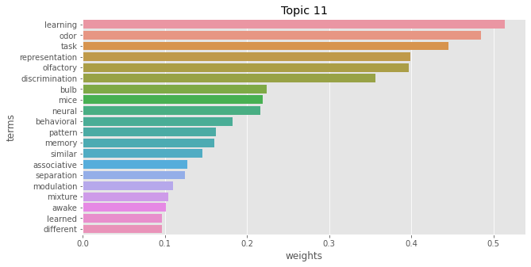
0.603 Wang et al. Task-demand-dependent neural representation of odor information in the olfactory bulb and posterior piriform cortex Journal of Neuroscience 2019/10/31
0.568 Chu et al. Lack of Pattern Separation in Sensory Inputs to the Olfactory Bulb during Perceptual Learning eNeuro 2017/09/21
0.507 Mandairon et al. Neurogenic correlates of an olfactory discrimination task in the adult olfactory bulb European Journal of Neuroscience 2006
0.492 Kudryavitskaya et al. Flexible categorization in the mouse olfactory bulb Current Biology April 26, 2021
0.484 Sun et al. Leptin modulates olfactory discrimination and neural activity in the olfactory bulb Acta Physiologica 2019
0.441 Li et al. Complex neural representation of odour information in the olfactory bulb Acta Physiologica 2020
0.422 Sultan et al. Learning-dependent neurogenesis in the olfactory bulb determines long-term olfactory memory The FASEB Journal March 9, 2010
0.412 Liu et al. Plasticity of Sniffing Pattern and Neural Activity in the Olfactory Bulb of Behaving Mice During Odor Sampling, Anticipation, and Reward Neuroscience Bulletin 2020-01-27
0.407 Nicol et al. Olfactory bulb encoding during learning under anesthesia Frontiers in Behavioral Neuroscience 2014
0.406 Pirhayatifard et al. Dense Odor Coding in the Mouse Olfactory Bulb NOJOURNAL NODATE
0.406 Jordan et al. Active Sampling State Dynamically Enhances Olfactory Bulb Odor Representation Neuron June 27, 2018
0.405 Gschwend et al. Neuronal pattern separation in the olfactory bulb improves odor discrimination learning Nature Neuroscience October 2015
0.398 Vinera et al. Olfactory perceptual learning requires action of noradrenaline in the olfactory bulb: comparison with olfactory associative learning Learning & Memory 03/01/2015
0.365 Jordan et al. Context dependent processing in the mouse olfactory bulb NOJOURNAL 2018-03-28
0.359 Abraham et al. Synaptic Inhibition in the Olfactory Bulb Accelerates Odor Discrimination in Mice Neuron 11/02/2010
0.345 Beshel et al. Olfactory Bulb Gamma Oscillations Are Enhanced with Task Demands The Journal of Neuroscience 08/01/2007
0.328 Kermen et al. Consolidation of an Olfactory Memory Trace in the Olfactory Bulb Is Required for Learning-Induced Survival of Adult-Born Neurons and Long-Term Memory PLOS ONE 13-Aug-2010
0.319 Mandairon et al. Cholinergic modulation in the olfactory bulb influences spontaneous olfactory discrimination in adult rats European Journal of Neuroscience 2006
0.318 Belnoue et al. A Critical Time Window for the Recruitment of Bulbar Newborn Neurons by Olfactory Discrimination Learning The Journal of Neuroscience 01/19/2011
0.313 Takahashi et al. A Subtype of Olfactory Bulb Interneurons Is Required for Odor Detection and Discrimination Behaviors The Journal of Neuroscience 2016-8-3
0.296 Mandairon et al. Broad activation of the olfactory bulb produces long-lasting changes in odor perception Proceedings of the National Academy of Sciences 2006/09/05
0.295 Losacco et al. Learning improves decoding of odor identity with phase-referenced oscillations in the olfactory bulb eLife NODATE
0.293 Gumaste et al. Behavioral discrimination and olfactory bulb encoding of odor plume intermittency NOJOURNAL 2022-12-01
0.266 Mandairon et al. Context-driven activation of odor representations in the absence of olfactory stimuli in the olfactory bulb and piriform cortex Frontiers in Behavioral Neuroscience 2014
0.263 Roland et al. Massive normalization of olfactory bulb output in mice with a 'monoclonal nose' eLife 2016/05/13
0.263 Adefuin et al. State-dependent representation of mixtures by the olfactory bulb NOJOURNAL 2022-01-11
0.261 Adefuin et al. State-dependent linearisation of mixture representations by the olfactory bulb NOJOURNAL 2021-09-24
0.259 Kato et al. Dynamic Sensory Representations in the Olfactory Bulb: Modulation by Wakefulness and Experience Neuron December 6, 2012
0.259 Doucette et al. Profound Context-Dependent Plasticity of Mitral Cell Responses in Olfactory Bulb PLOS Biol 28-Oct-2008
0.259 Wilson et al. Comparison of Odor Receptive Field Plasticity in the Rat Olfactory Bulb and Anterior Piriform Cortex Journal of Neurophysiology 2000/12/01
0.259 Ogg et al. Olfactory bulb acetylcholine release dishabituates odor responses and reinstates odor investigation Nature Communications 2018-05-14
0.257 Cleland et al. Construction of odor representations by olfactory bulb microcircuits Progress in Brain Research 2014
0.251 Manella et al. Stimulation of the locus coeruleus modulates signal-to-noise ratio in the olfactory bulb Journal of Neuroscience 2017/10/24
0.216 Koldaeva et al. Rapid task-dependent tuning of the mouse olfactory bulb eLife February 6, 2019
0.215 Ung et al. Parallel astrocyte calcium signaling modulates olfactory bulb responses Journal of Neuroscience Research NODATE
0.202 Linster et al. Norepinephrine, olfactory bulb and memory stability bioRxiv 2020-06-19
0.202 Kollo et al. 'Silent' mitral cells dominate odor responses in the olfactory bulb of awake mice Nature Neuroscience October 2014
0.197 Thiebaud et al. A unique olfactory bulb microcircuit driven by neurons expressing the precursor to glucagon-like peptide 1 Scientific Reports 2019-10-29
0.196 Kermen et al. Topographical representation of odor hedonics in the olfactory bulb Nature Neuroscience 2016-07
0.192 Yoles-Frenkel et al. Balancing memory fidelity and representational stability in the female mouse accessory olfactory bulb NOJOURNAL 2021-10-28
0.187 Suyama et al. Mammalian social memory relies on neuromodulation in the olfactory bulb Neuroforum 2022-06-21
0.171 Cho et al. Experience enhances certainty about olfactory stimuli under bulbar cholinergic control Learning & Memory 10/01/2020
0.170 Vinograd et al. The Pre Synaptic Landscape of Mitral/Tufted Cells of the Main Olfactory Bulb Frontiers in Neuroanatomy 2019
0.137 Soelter et al. Computational exploration of molecular receptive fields in the olfactory bulb reveals a glomerulus-centric chemical map. bioRxiv 2018-12-07
0.124 Kahan et al. Extracting Behaviorally Relevant Traits from Natural Stimuli: Benefits of Combinatorial Representations at the Accessory Olfactory Bulb PLOS Comput Biol 03-Mar-2016
0.105 Su et al. Enhanced ongoing endogenous activity predicts elimination of adult-born neurons in the mouse olfactory bulb bioRxiv 2020-09-09
0.021 Malvaut et al. The role of different subtypes of olfactory bulb interneurons in olfactory behavior NOJOURNAL 2019
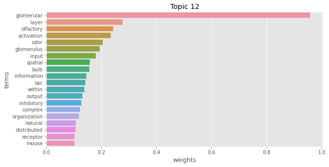
0.617 Wachowiak et al. Coding and synaptic processing of sensory information in the glomerular layer of the olfactory bulb Seminars in Cell & Developmental Biology August 2006
0.523 Cavarretta et al. Glomerular and mitral-granule cell microcircuits coordinate temporal and spatial information processing in the olfactory bulb Frontiers in Computational Neuroscience 2016
0.518 Friedrich et al. Combinatorial and Chemotopic Odorant Coding in the Zebrafish Olfactory Bulb Visualized by Optical Imaging Neuron May 1, 1997
0.465 Zhou et al. Short-term Plasticity in Glomerular Inhibitory Circuits Shapes Olfactory Bulb Output Journal of Neurophysiology January 29, 2020
0.445 Fletcher et al. Olfactory aversive conditioning alters olfactory bulb mitral/tufted cell glomerular odor responses Frontiers in Systems Neuroscience 2012-3-22
0.440 Zhou et al. Short-term plasticity in glomerular inhibitory circuits shapes olfactory bulb output Journal of Neurophysiology March 1, 2020
0.434 Gire et al. Control of On/Off Glomerular Signaling by a Local GABAergic Microcircuit in the Olfactory Bulb Journal of Neuroscience 2009/10/28
0.430 Migliore et al. Synaptic clusters function as odor operators in the olfactory bulb Proceedings of the National Academy of Sciences 07/07/2015
0.429 Bendahmane et al. Increased olfactory bulb acetylcholine bi-directionally modulates glomerular odor sensitivity Scientific Reports 2016-05-11
0.401 Parsa et al. Signaling between periglomerular cells reveals a bimodal role for GABA in modulating glomerular microcircuitry in the olfactory bulb Proceedings of the National Academy of Sciences 07/28/2015
0.394 Banerjee et al. An Interglomerular Circuit Gates Glomerular Output and Implements Gain Control in the Mouse Olfactory Bulb Neuron 2015/07/01
0.370 Cavarretta et al. Parallel odor processing by mitral and middle tufted cells in the olfactory bulb Scientific Reports 2018-05-16
0.325 Schmaltz et al. The role of sensory experience in intrinsic biophysical diversity of glomerular interneurons of the olfactory bulb NOJOURNAL 2017-05-28
0.311 Li et al. Precise Detection of Direct Glomerular Input Duration by the Olfactory Bulb Journal of Neuroscience 2014/11/26
0.302 Parrish-Aungst et al. Quantitative analysis of neuronal diversity in the mouse olfactory bulb The Journal of Comparative Neurology April 20, 2007
0.293 Bywalez et al. Dendritic Arborization Patterns of Small Juxtaglomerular Cell Subtypes within the Rodent Olfactory Bulb Frontiers in Neuroanatomy 2017
0.288 Tatti et al. A population of glomerular glutamatergic neurons controls sensory information transfer in the mouse olfactory bulb Nature Communications 2014-05-07
0.279 Linster et al. Glomerular microcircuits in the olfactory bulb Neural networks : the official journal of the International Neural Network Society 2009-10
0.274 Mandairon et al. Long-term fate and distribution of newborn cells in the adult mouse olfactory bulb: Influences of olfactory deprivation Neuroscience January 1, 2006
0.273 Shang et al. Block of dendrodendritic inhibition unleashes widely spread lateral propagation of odor-evoked activity in the mouse olfactory bulb Neuroscience September 9, 2018
0.272 Li et al. A Two-Layer Biophysical Model of Cholinergic Neuromodulation in Olfactory Bulb Journal of Neuroscience 2013/02/13
0.262 Lin et al. Representation of Natural Stimuli in the Rodent Main Olfactory Bulb Neuron June 15, 2006
0.247 Kosaka et al. Synaptic organization of the glomerulus in the main olfactory bulb: Compartments of the glomerulus and heterogeneity of the periglomerular cells Anatomical Science International 2005-06
0.240 Chen et al. Odor coding by modules of coherent mitral/tufted cells in the vertebrate olfactory bulb Proceedings of the National Academy of Sciences 02/17/2009